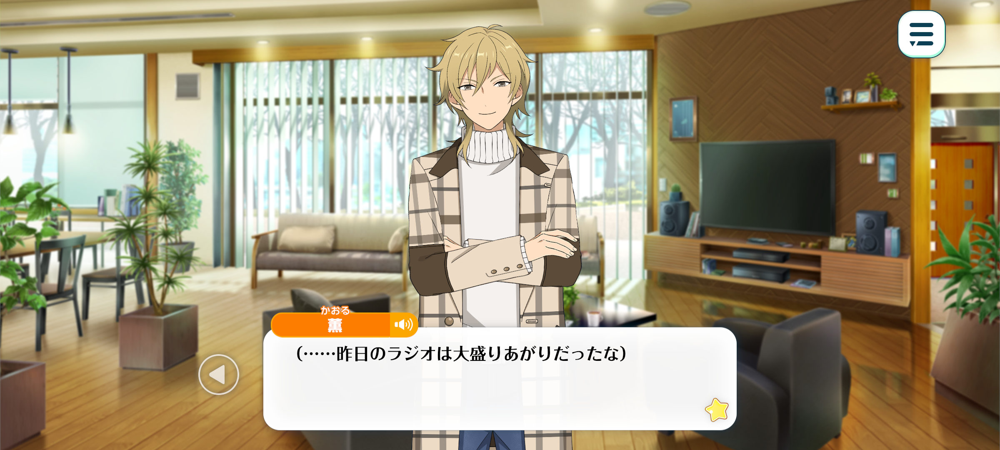
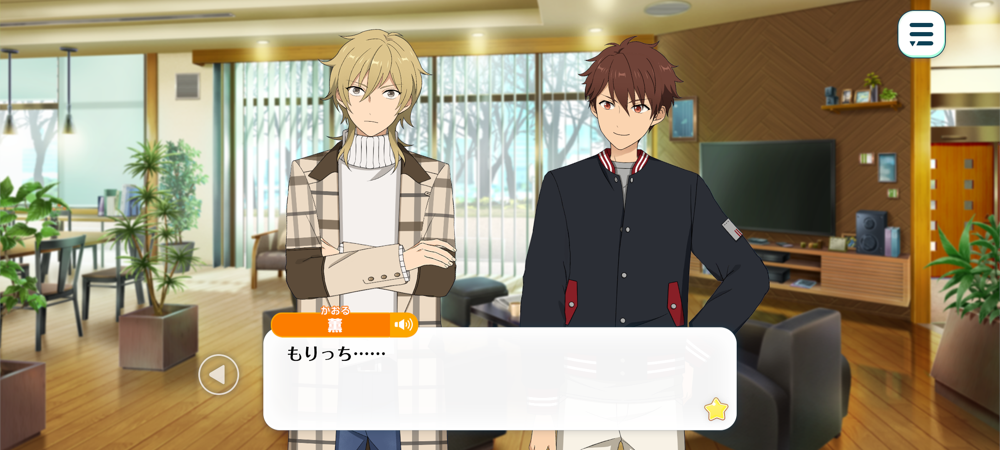
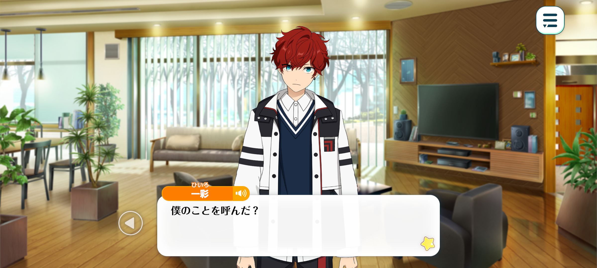
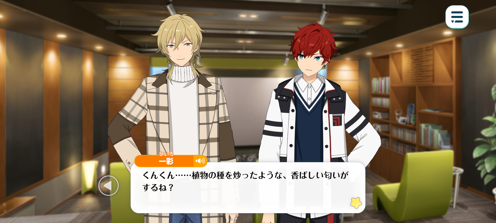
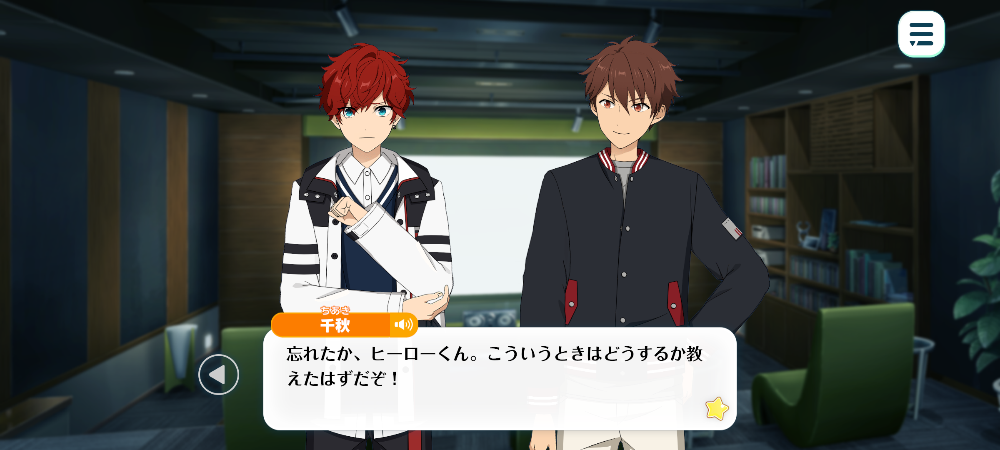

Scout! Scorpio's Venom
Capture Your Heart – Chapter 3


Time: In the afternoon of the following day

Kaoru: (...Yesterday's radio show was a huge hit.)
(Apparently, all it takes is an idol talking about Vampire Shogun these days to get everyone excited.)
(Even though it was the middle of the night, our listener numbers shot way up.)
(Well, at least I've learned a thing or two about Vampire Shogun now.)
(But it's an old series, and it hasn't really helped me learn much about hero shows in general...)
Ugh... What am I supposed to do now...?

Chiaki: Hakaze! Are you alright?! What's with that big sigh?!
Kaoru: Moricchi...
Chiaki: What's troubling you? If something's on your mind, I'm more than happy to lend an ear!
Kaoru: What are you—... Oh! Right, I can just ask you!
Since I'm going to be taking part in the hero show, I want to learn more about heroes and really get into the spirit of things. But I'm having a hard time figuring out where to start.
Is there any way I can get up to speed quickly?
Chiaki: Hmm... A hero's journey begins with a single step! You can't expect to become an expert overnight![1]
But the best way to learn about heroes is to watch hero shows, of course! Sentai series are the perfect place to start!
I'll find something that'll suit you! So, tell me, what kind of heroes do you like?
Kaoru: How am I supposed to know? I don't know anything about heroes! That's why I'm asking you...

Hiiro: Did you call me?
Kaoru: Wah? Hiiro-kun!
No, we didn't...? Ah, I suppose "hero" and "Hiiro" do sound pretty similar. I can see how you'd get them mixed up.
Chiaki: And that's why I call him Hero-kun! With both envy and affection...☆
Kaoru: Oh, really? Does that bother you, Hiiro-kun?
Hiiro: Not anymore. It did at first, but then Chiaki-senpai explained what a hero was to me.
Anyway, when are we having that tokusatsu marathon? I've been looking forward to it!
Chiaki: The tokusatsu marathon… Huh?!
M-My apologies! There was just so much stuff to choose from, and I wanted to carefully pick out the very best shows for a beginner like you...
But I got so caught up in choosing them that I completely forgot to arrange it!
Kaoru: Ahaha, don't worry about it, Moricchi.
A tokusatsu marathon, huh...? How about today? Would that work for you two?
I think it'd be pretty useful for a beginner like me. I'd be happy to join!
Chiaki: Tonight is good for me! I'll have everything picked out by then. What about you, Hero-kun?
Hiiro: Same for me. I didn't think we'd actually get to have one. Thank you, Kaoru-senpai.
Kaoru: I should be the one saying thanks. Well then, I'll see you both later.
Time: Later that night
Location: In the Seisoukan Cinema Room

Kaoru: Sorry to keep you two waiting!
Hiiro: Sniff, sniff... Is that the smell of roasted seeds?
Kaoru: What's with that look? It's popcorn! Have you never had any before?
It's practically a movie-watching essential! Nothing beats settling down with a big bowl of popcorn and enjoying a film...
Chiaki: My, my! You're quite the thoughtful one, Hakaze~!
Kaoru: Fufu. You went to all the trouble of organising this, so bringing some popcorn was the least I could do.
Anyway, what are we watching?
Chiaki: Ah, yes! Now that everyone's here, allow me to show you!
Behold! Our viewing material for tonight... A whole collection of tokusatsu DVDs! ☆
Kaoru: ...Uh, that's quite a lot of DVDs. It's practically a mountain! And you said you'd carefully selected these?
Chiaki: Of course I did! I simply couldn't bear to leave any of them out, though I did have to make a few difficult choices...
Now then! Let the show begin! First up, a true pioneer of the genre, Moonlight Mask…☆
Time: A short time later

Hiiro: —Chiaki-senpai! The hero's in trouble!
Chiaki: Have you forgotten, Hero-kun?! What should we do when a hero finds themselves in such a predicament?!
Hiiro: Umu! We have to cheer them on!
Chiaki: Precisely!
Kaoru: Nono! This isn't a live hero show. Can't we just sit back and enjoy it quietly?
Chiaki: Aren't you watching all this to prepare for our own show?! I'll teach you how to inspire the hearts of the children who'll be cheering you on, Hakaze!
Kaoru: Uhh...
Hiiro: Don't give up, hero! ...It's your turn now, Kaoru-senpai!
Kaoru: D-don't give up~...
Chiaki: What's the matter? Don't tell me you're embarrassed?! This room's soundproof, so there's no need to hold back!
Come on! Let them hear you! Cheer with all your heart! ☆
Kaoru: The way you're looking at me with such hopeful eyes is putting me under a lot of pressure, Moricchi... Ugh, fine!
Do your best, Hero…!
- he’s using the phrase 千里の道も一歩から which means “a journey of a thousand miles begins with a single step” but instead of saying a thousand miles he says heroes!